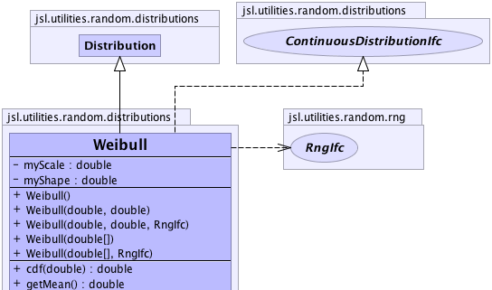
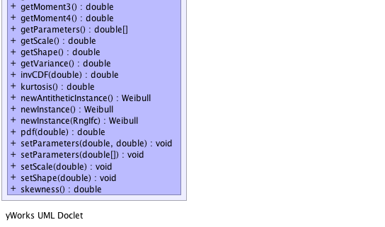

jsl.utilities.random.AbstractRandom
jsl.utilities.random.distributions.Distribution
jsl.utilities.random.distributions.Weibull
jsl.utilities.random.AbstractRandom
jsl.utilities.random.distributions.Distribution
jsl.utilities.random.distributions.Weibull
|
||||||||||
| PREV CLASS NEXT CLASS | FRAMES NO FRAMES | |||||||||
| SUMMARY: NESTED | FIELD | CONSTR | METHOD | DETAIL: FIELD | CONSTR | METHOD | |||||||||
java.lang.Object
public class Weibull
This class defines a weibull distribution
|  |
|  |
| Nested Class Summary |
|---|
| Nested classes/interfaces inherited from class jsl.utilities.random.AbstractRandom |
|---|
AbstractRandom.RandomControls |
| Field Summary | |
|---|---|
private double |
myScale
|
private double |
myShape
|
| Fields inherited from class jsl.utilities.random.distributions.Distribution |
|---|
myRNG |
| Fields inherited from class jsl.utilities.random.AbstractRandom |
|---|
myId, myName |
| Constructor Summary | |
|---|---|
Weibull()
Creates new weibull with shape 1.0, scale 1.0 |
|
Weibull(double[] parameters)
Constructs a weibull distribution with shape = parameters[0] and scale = parameters[1] |
|
Weibull(double[] parameters,
RngIfc rng)
Constructs a weibull distribution with shape = parameters[0] and scale = parameters[1] |
|
Weibull(double shape,
double scale)
Constructs a weibull distribution with supplied shape and scale |
|
Weibull(double shape,
double scale,
RngIfc rng)
Constructs a weibull distribution with supplied shape and scale |
|
| Method Summary | |
|---|---|
double |
cdf(double x)
Returns the F(x) = Pr{X <= x} where F represents the cumulative distribution function |
double |
getMean()
Returns the mean or expected value of a distribution |
double |
getMoment3()
|
double |
getMoment4()
|
double[] |
getParameters()
Gets the parameters for the distribution |
double |
getScale()
Gets the scale parameter |
double |
getShape()
Gets the shape |
double |
getVariance()
Returns the variance of the distribution if defined |
double |
invCDF(double p)
Returns the inverse cumulative distribution function of the triangular distribution throws IllegalArgumentException if the value of the argument passed is beyond the range [0,1] p = 0.0 returns 0.0 p = 1.0 returns Double.POSITIVE_INFINTITY |
double |
kurtosis()
Gets the kurtosis of the distribution www.mathworld.wolfram.com/WeibullDistribution.html |
Weibull |
newAntitheticInstance()
Returns a new instance that will supply values based on antithetic U(0,1) when compared to this distribution |
Weibull |
newInstance()
Returns a new instance of the random source with the same parameters but an independent generator |
Weibull |
newInstance(RngIfc rng)
Returns a new instance of the random source with the same parameters with the supplied RngIfc |
double |
pdf(double x)
Returns the f(x) where f represents the probability density function for the distribution. |
void |
setParameters(double[] parameters)
Sets the parameters for the distribution with shape = parameters[0] and scale = parameters[1] |
void |
setParameters(double shape,
double scale)
Sets the parameters |
void |
setScale(double scale)
Sets the scale parameter |
void |
setShape(double shape)
Sets the shape parameter |
double |
skewness()
Gets the skewness of the distribution www.mathworld.wolfram.com/WeibullDistribution.html |
| Methods inherited from class jsl.utilities.random.distributions.Distribution |
|---|
advanceToNextSubstream, cdf, complementaryCDF, getAntitheticOption, getAntitheticValue, getRandomNumberGenerator, getStandardDeviation, getValue, inverseContinuousCDFViaBisection, inverseContinuousCDFViaBisection, inverseDiscreteCDFViaSearchUp, resetStartStream, resetStartSubstream, setAntitheticOption, setRandomNumberGenerator, toString |
| Methods inherited from class jsl.utilities.random.AbstractRandom |
|---|
getId, getName, getSample, getSample, makeControls, setControls, setId, setName |
| Methods inherited from class java.lang.Object |
|---|
clone, equals, finalize, getClass, hashCode, notify, notifyAll, wait, wait, wait |
| Methods inherited from interface jsl.utilities.random.distributions.CDFIfc |
|---|
cdf, complementaryCDF |
| Methods inherited from interface jsl.utilities.random.SampleIfc |
|---|
getSample, getSample |
| Field Detail |
|---|
private double myShape
private double myScale
| Constructor Detail |
|---|
public Weibull()
public Weibull(double[] parameters)
parameters - An array with the shape and scale
public Weibull(double[] parameters,
RngIfc rng)
parameters - An array with the shape and scalerng -
public Weibull(double shape,
double scale)
shape - The shape parameter of the distributionscale - The scale parameter of the distribution
public Weibull(double shape,
double scale,
RngIfc rng)
shape - The shape parameter of the distributionscale - The scale parameter of the distributionrng - A RngIfc| Method Detail |
|---|
public final Weibull newInstance()
newInstance in interface NewInstanceIfcnewInstance in interface RandomIfcnewInstance in class Distributionpublic final Weibull newInstance(RngIfc rng)
newInstance in interface RandomIfcnewInstance in class Distributionrng -
public final Weibull newAntitheticInstance()
newAntitheticInstance in class Distribution
public final void setParameters(double shape,
double scale)
shape - The shape parameter must > 0.0scale - The scale parameter must be > 0.0public final void setParameters(double[] parameters)
setParameters in interface ParametersIfcparameters - an array of doubles representing the parameters for
the distributionpublic final double[] getParameters()
getParameters in interface ParametersIfcpublic final void setShape(double shape)
shape - The shape parameter must > 0.0public final void setScale(double scale)
scale - The scale parameter must be > 0.0public final double getShape()
public final double getScale()
public final double getMean()
MeanIfc
getMean in interface MeanIfcpublic final double getVariance()
VarianceIfc
getVariance in interface VarianceIfcpublic final double cdf(double x)
CDFIfc
cdf in interface CDFIfcx - a double representing the upper limit
public final double pdf(double x)
PDFIfc
pdf in interface PDFIfcx - a double representing the value to be evaluatedpublic final double invCDF(double p)
invCDF in interface CDFIfcp - the cumulative probability that requires the corresponding point
public final double getMoment3()
public final double getMoment4()
public final double kurtosis()
public final double skewness()
|
||||||||||
| PREV CLASS NEXT CLASS | FRAMES NO FRAMES | |||||||||
| SUMMARY: NESTED | FIELD | CONSTR | METHOD | DETAIL: FIELD | CONSTR | METHOD | |||||||||